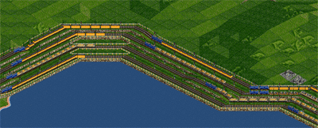
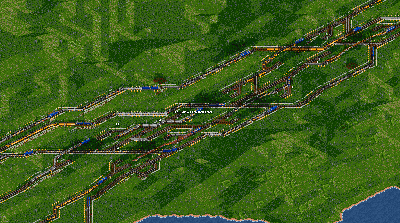
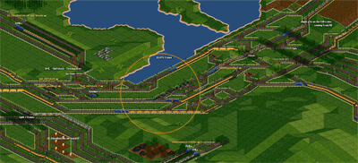

Impressions of Public-Server Game #74
The last Public-Server Game was quite a nice one. The game was played for more than 80 hours in six days (14th – 20th December). Due to the fact our players live throughout the world our games can run almost 24/7. 
We built 600 trains with a train-length of 8 tiles. They bring a network quite into struggle. But our massive tracks with 4 lanes or more were able to handle the traffic. Remember, those trains use as much tiles as 1200 4 tile trains. Our network flow was notably affected by the reliability of two major Backbone-Hubs. The terraforming restrictions made building always a conflict between the look-alike and efficiency.



Hilly 3on3 joiner of BBH01 by Planetmaker
This game was also nice because of the small planned network. I really like to adapt a network to the trains. Starting with a small network and extending it to its needs is much more fun than building a big network which is almost empty. We did pretty well in this game. In the end it is not jamming, but if you change something badly it will jam within seconds. To ensure a less jammed network while building or messing it is absolutely necessary to build bypasses and re-route trains. Sometimes this didn’t work and the ignore-signal-button turned into evilness.


Train Crash at BBH 01
Anyway I am still messing around with the ‘worst case’ problematic’, which is worth an own posting. The worst case occurs when a train enters a track, but at the point of joining the signal turns red and the train blocks a complete track. My SML Shiftback was removed because it ‘failed miserably’. Well, I’d say it didn’t fail, but worst cases make a builders life hard and SML Shiftback is important for a homogeneous network flow. Some more information about the Shiftback problematic will follow soon.
Last but not least a link to the Map Overview, you should look at it. Some artists worked there. 😛
My major critic is that I discovered too many bad placed signals. Please have a loot at the article about signalling.

A nice game and I hope we will play more of this kind soon.
Categories: Community News, Public Server
Skol December 20, 2007 15:15
Your switchback didn’t fail miserably 🙂
I just didn’t understand it, so I was afraid of touching it. I THINK I get what it was doing, but I think various signaling errors (and that map was acting weird, imo) caused it to jam occasionally. Not a miserable failure at all 😉
tneo December 20, 2007 17:13
The shiftback caused jams unintended most likely…
Osai December 21, 2007 23:44
I was able to build a very nice variant of the SML Shiftback in my experimental game. Tomorrow I’ll post video & details of SML shiftback. Especially the ‘worst case’ is solved nicely, that’s the most important thing.
SML Shiftback at #openttdcoop February 5, 2008 17:46
[…] has been a while since this idea came in my mind. I experimented to find a better way managing the train flow. The main idea of the […]